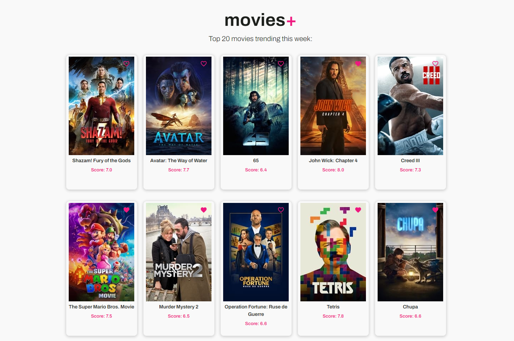
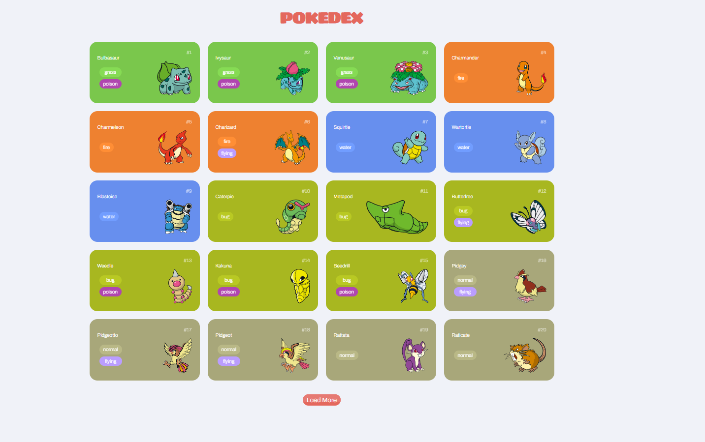

Experiência Profissional
Analista de Suporte Técnico
Atento
2018 - Atual
Gerenciamento de eventos de rede externa (SLA). Atendimento às contratadas, análise de evidências das ocorrências, elaboração de relatórios, interação com a gestão.
FORMAÇÃO
Análise e Desenvolvimento de Sistemas
Centro Universitário Senac
2020-2023
Análise e Desenvolvimento de Sistemas
Centro Universitário Senac
2020-2023
Portfólio


